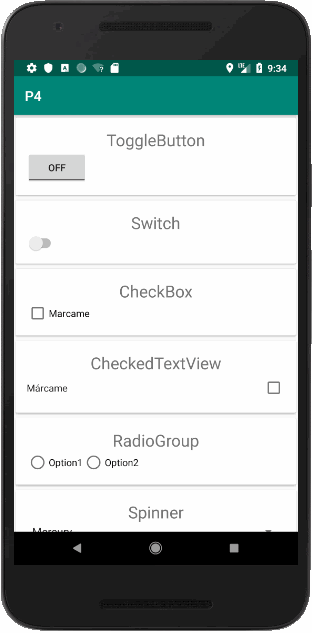
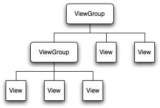
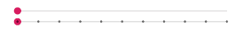
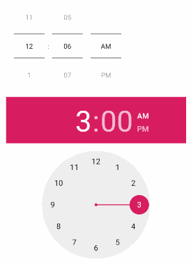
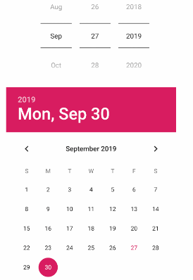
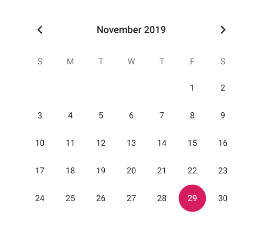

El objetivo de esta práctica es introducir el uso de diferentes Widgets de Interfaz de Usuario.
Realizaremos una App que incorpore diversos Widgets. El estado de cada Widget se guardará en el fichero SharedPreferences, y se restaurará al iniciar la Aplicación.

Aquí el código completo de la app: https://github.com/gerardfp/P4
View y ViewGroup
La clase View es el bloque de construcción básico para los componentes de Interfaz de Usuario. Una View ocupa un area rectangular en la pantalla y es responsable del dibujado y del manejo de eventos. View es la clase base para los widgets, los cuales se usan para crear componentes de Interfaz de Usuario interactivos (Button, EditText, TextView, etc.). La subclase ViewGroup es la clase base para layouts (ConstraintLayout, LinearLayout, FrameLayout, etc.) que son contenedores invisibles que sustentan otras Views (o otros ViewGroups) y definen sus propiedades de disposición.

Actualmente existen un total de 139 subclases (directas e indirectas) de View. Veremos las siguientes:
- ToggleButton
- Switch
- CheckBox
- CheckedTextView
- RadioButton
- Spinner
- ProgressBar
- SeekBar
- RatingBar
- TimePicker
- DatePicker
- CalendarView
- NumberPicker
Widgets
Cada widget incorpora una serie de atributos XML y métodos Java para poder configurarlo y interactuar con él. Estos atributos y métodos varian según el widget y según la version del SDK que use nuestra aplicación.
Encontrarás todos los métodos y atributos de todos Widget en la referencia de Android: https://developer.android.com/reference/android/widget/package-summary
Selecciona la versión de la API que quieres consultar. Para esta práctica usaremos la versión 26. Seleccionala en el desplegable:

También tendrás que cambiar la configuración del proyecto en el archivo build.gradle (Module:app).
minSdkVersion 26Layout de la Aplicación
Usaremos el siguiente layout como base:
<?xml version="1.0" encoding="utf-8"?>
<LinearLayout xmlns:android="http://schemas.android.com/apk/res/android"
xmlns:app="http://schemas.android.com/apk/res-auto"
xmlns:tools="http://schemas.android.com/tools"
android:layout_width="match_parent"
android:layout_height="match_parent">
<ScrollView
android:layout_width="match_parent"
android:layout_height="match_parent">
<LinearLayout
android:layout_width="match_parent"
android:layout_height="match_parent"
android:orientation="vertical">
<!--Widgets-->
</LinearLayout>
</ScrollView>
</LinearLayout>Incluiremos cada Widget dentro de un CardView
<androidx.cardview.widget.CardView
android:layout_width="match_parent"
android:layout_height="wrap_content"
app:cardUseCompatPadding="true">
<LinearLayout
android:layout_width="match_parent"
android:layout_height="wrap_content"
android:orientation="vertical"
android:padding="16dp">
<TextView
android:text="Nombre del Widget"
android:gravity="center"
android:textSize="24sp"
android:layout_width="match_parent"
android:layout_height="wrap_content"/>
<!--<Widget/>-->
</LinearLayout>
</androidx.cardview.widget.CardView>Necesitarás incluir la dependencia de la librería CardView en el archivo build.gradle (Module:app).
dependencies {
implementation 'androidx.cardview:cardview:1.0.0'
}MainActivity
En la MainActivity inicializaremos las SharedPreferences guardándolas en la variable prefs por comodidad.
También habrá que definir las variables para cada Widget y inicializarlas con findViewById().
public class MainActivity extends AppCompatActivity {
SharedPreferences prefs;
ToggleButton toggleButton;
// resto de widgets
@Override
protected void onCreate(Bundle savedInstanceState) {
super.onCreate(savedInstanceState);
setContentView(R.layout.activity_main);
prefs = getPreferences(MODE_PRIVATE);
toggleButton = findViewById(R.id.toogleButton);
// resto de widgets
}
}https://developer.android.com/reference/android/widget/ToggleButton
<ToggleButton
android:id="@+id/toggleButton"
android:layout_width="wrap_content"
android:layout_height="wrap_content"/>toggleButton.setChecked(prefs.getBoolean("TOGGLEBUTTON", false));
toggleButton.setOnCheckedChangeListener(new CompoundButton.OnCheckedChangeListener() {
@Override
public void onCheckedChanged(CompoundButton compoundButton, boolean b) {
prefs.edit().putBoolean("TOGGLEBUTTON", b).apply();
}
});El parámetro b del callback onCheckedChanged indica si el ToggleButton está activado o no.
https://developer.android.com/reference/android/widget/Switch
<Switch
android:id="@+id/aSwitch"
android:layout_width="wrap_content"
android:layout_height="wrap_content"/>aSwitch.setChecked(prefs.getBoolean("SWITCH", false));
aSwitch.setOnCheckedChangeListener(new CompoundButton.OnCheckedChangeListener() {
@Override
public void onCheckedChanged(CompoundButton compoundButton, boolean b) {
prefs.edit().putBoolean("SWITCH", b).apply();
}
});El parámetro b del callback onCheckedChanged indica si el Switch está activado o no.
https://developer.android.com/reference/android/widget/CheckBox
<CheckBox
android:id="@+id/checkBox"
android:layout_width="wrap_content"
android:layout_height="wrap_content"
android:text="Marcame" />checkBox.setChecked(prefs.getBoolean("CHECKBOX", false));
checkBox.setOnCheckedChangeListener(new CompoundButton.OnCheckedChangeListener() {
@Override
public void onCheckedChanged(CompoundButton compoundButton, boolean b) {
prefs.edit().putBoolean("CHECKBOX", b).apply();
}
});El parámetro b del callback onCheckedChanged indica si el CheckBox está activado o no.
https://developer.android.com/reference/android/widget/CheckedTextView
<CheckedTextView
android:id="@+id/checkedTextView"
android:text="Márcame"
android:layout_width="match_parent"
android:layout_height="wrap_content"
android:drawableRight="?android:attr/listChoiceIndicatorMultiple"/>checkedTextView.setChecked(prefs.getBoolean("CHECKEDTEXTVIEW",false));
checkedTextView.setOnClickListener(new View.OnClickListener() {
@Override
public void onClick(View view) {
checkedTextView.toggle();
prefs.edit().putBoolean("CHECKEDTEXTVIEW", checkedTextView.isChecked()).apply();
}
});El CheckedTextView se usa principalmente para seleccionar ítems en listas. Ejemplo:
Con el atributo android:drawableRight="?android:attr/listChoiceIndicatorMultiple" personalizamos el icono.
El CheckedTextView responde al evento onClick, y en el callback lo tenemos que activar/desactivar manualmente.
https://developer.android.com/reference/android/widget/RadioGroup
<RadioGroup
android:id="@+id/radioGroup"
android:layout_width="match_parent"
android:layout_height="match_parent"
android:orientation="horizontal">
<RadioButton
android:id="@+id/radioButton"
android:layout_width="wrap_content"
android:layout_height="wrap_content"
android:text="Option1" />
<RadioButton
android:id="@+id/radioButton2"
android:layout_width="wrap_content"
android:layout_height="wrap_content"
android:text="Option2" />
</RadioGroup>radioGroup.check(prefs.getInt("RADIOGROUP", radioGroup.getCheckedRadioButtonId()));
radioGroup.setOnCheckedChangeListener(new RadioGroup.OnCheckedChangeListener() {
@Override
public void onCheckedChanged(RadioGroup radioGroup, int i) {
prefs.edit().putInt("RADIOGROUP", i).apply();
}
});El RadioGroup solamente permite un elemento RadioButton activado en su interior.
El parámetro i del callback indica el elemento que se ha activado.
https://developer.android.com/reference/android/widget/Spinner
<Spinner
android:id="@+id/spinner1"
android:layout_width="match_parent"
android:layout_height="wrap_content"
android:entries="@array/planets_array"/>
<Spinner
android:id="@+id/spinner2"
android:layout_width="match_parent"
android:layout_height="wrap_content"
android:spinnerMode="dialog"/><string-array name="planets_array">
<item>Mercury</item>
<item>Venus</item>
<item>Earth</item>
<item>Mars</item>
<item>Jupiter</item>
<item>Saturn</item>
<item>Uranus</item>
<item>Neptune</item>
</string-array>spinner1.setSelection(prefs.getInt("SPINNER1", 0));
spinner1.setOnItemSelectedListener(new AdapterView.OnItemSelectedListener() {
@Override
public void onItemSelected(AdapterView<?> adapterView, View view, int i, long l) {
prefs.edit().putInt("SPINNER1", i).apply();
}
@Override
public void onNothingSelected(AdapterView<?> adapterView) {
}
});
String[] items = new String[]{"Milky Way", "Andromeda", "Cassiopeia", "Sagittarius", "Pegasus"};
ArrayAdapter<String> arrayAdapter = new ArrayAdapter<>(this, R.layout.support_simple_spinner_dropdown_item, items);
spinner2.setAdapter(arrayAdapter);
spinner2.setSelection(prefs.getInt("SPINNER2", 0));
spinner2.setOnItemSelectedListener(new AdapterView.OnItemSelectedListener() {
@Override
public void onItemSelected(AdapterView<?> adapterView, View view, int i, long l) {
prefs.edit().putInt("SPINNER2", i).apply();
}
@Override
public void onNothingSelected(AdapterView<?> adapterView) {
}
});En esta muestra se han creado dos Spinners:
- El primero toma las diferentes opciones, en tiempo de diseño, del array
planets_arraydefinido en el ficherostrings.xml. Se muestra como un desplegable. El parámetroidel callbackonItemSelectedindica el elemento que se ha seleccionado. - El segundo Spinner toma las diferentes opciones, en tiempo de ejecución, del array
items. El parámetroandroid:spinnerMode="dialog"hace que las opciones se muestren en un diálogo.
https://developer.android.com/reference/android/widget/ProgressBar
<ProgressBar
android:id="@+id/progressBar1"
android:layout_width="wrap_content"
android:layout_height="wrap_content" />
<ProgressBar
android:id="@+id/progressBar2"
android:layout_width="match_parent"
android:layout_height="wrap_content"
style="?android:attr/progressBarStyleHorizontal" />
<Button
android:id="@+id/startProgress"
android:layout_width="wrap_content"
android:layout_height="wrap_content"
android:text="Start" />progressBar1.setVisibility(View.GONE);
progressBar2.setVisibility(View.GONE);
progressBar2.setMax(100);
progressBar2.setProgress(0);
startProgress.setOnClickListener(new View.OnClickListener() {
@Override
public void onClick(View view) {
new AsyncTask<Integer, Integer, String>() {
@Override
protected String doInBackground(Integer... integers) {
int total = integers[0];
int step = integers[1];
for (int count=0; count <= total/step; count++) {
try {
Thread.sleep(step);
publishProgress((int) (count*step/(float)total*100));
} catch (InterruptedException e) {
e.printStackTrace();
}
}
return "Task Completed.";
}
@Override
protected void onPreExecute() {
startProgress.setText("Task Starting...");
startProgress.setEnabled(false);
progressBar1.setVisibility(View.VISIBLE);
progressBar2.setVisibility(View.VISIBLE);
}
@Override
protected void onProgressUpdate(Integer... values) {
progressBar2.setProgress((int) (values[0]*progressBar2.getMax()/100.0f));
}
@Override
protected void onPostExecute(String result) {
Toast.makeText(MainActivity.this, result, Toast.LENGTH_SHORT).show();
startProgress.setText("Restart");
startProgress.setEnabled(true);
progressBar1.setVisibility(View.GONE);
progressBar2.setVisibility(View.GONE);
}
}.execute(1000, 10);
}
});El primer ProgressBar se muestra como un círculo dando vueltas. En él no se puede establecer un progreso, simplemente se mantiene girando.
Con el atributo style="?android:attr/progressBarStyleHorizontal" hacemos que el ProgressBar sea una barra horizontal, en la que se puede establecer un porcentage de progreso.
En esta muestra hemos puesto el botón startProgress para iniciar una "tarea de fondo" de ejemplo que simplemente cuenta hasta 1000 de 10 en 10. En cada paso actualiza el progreso del ProgressBar horizontal con el método setProgress().
En un principio las dos ProgressBar estan ocultas (View.GONE). Cuando se presiona el botón las dos se hacen visibles (View.VISIBLE). Se va actualizando el progreso. Y cuando termina se vuelven a ocultar las ProgressBar.
https://developer.android.com/reference/android/widget/SeekBar

<SeekBar
android:id="@+id/seekBar"
android:layout_width="match_parent"
android:layout_height="wrap_content" />
<SeekBar
android:id="@+id/seekBar2"
style="@style/Widget.AppCompat.SeekBar.Discrete"
android:layout_width="match_parent"
android:layout_height="wrap_content"
android:max="10" />seekBar1.setProgress(prefs.getInt("SEEKBAR1",0));
seekBar1.setOnSeekBarChangeListener(new SeekBar.OnSeekBarChangeListener() {
@Override
public void onProgressChanged(SeekBar seekBar, int i, boolean b) {
prefs.edit().putInt("SEEKBAR1", i).apply();
}
@Override
public void onStartTrackingTouch(SeekBar seekBar) {
}
@Override
public void onStopTrackingTouch(SeekBar seekBar) {
}
});
seekBar2.setProgress(prefs.getInt("SEEKBAR2",0));
seekBar2.setOnSeekBarChangeListener(new SeekBar.OnSeekBarChangeListener() {
@Override
public void onProgressChanged(SeekBar seekBar, int i, boolean b) {
prefs.edit().putInt("SEEKBAR2", i).apply();
}
@Override
public void onStartTrackingTouch(SeekBar seekBar) {
}
@Override
public void onStopTrackingTouch(SeekBar seekBar) {
}
});Por defecto el mínimo valor del SeekBar es 0 y el máximo es 100.
Con el atributo style="@style/Widget.AppCompat.SeekBar.Discrete" hacemos que aparezca un círculo en cada valor posible de la barra.
El parámetro i del callback indica el valor seleccionado.
https://developer.android.com/reference/android/widget/RatingBar

<RatingBar
android:id="@+id/ratingBar"
android:layout_width="wrap_content"
android:layout_height="wrap_content" />ratingBar.setRating(prefs.getFloat("RATINGBAR", 0));
ratingBar.setOnRatingBarChangeListener(new RatingBar.OnRatingBarChangeListener() {
@Override
public void onRatingChanged(RatingBar ratingBar, float v, boolean b) {
prefs.edit().putFloat("RATINGBAR", v);
}
});El parámetro v del callback indica el valor seleccionado.
https://developer.android.com/reference/android/widget/TimePicker

<TimePicker
android:id="@+id/timePicker1"
android:layout_width="wrap_content"
android:layout_height="wrap_content"
android:timePickerMode="spinner" />
<TimePicker
android:id="@+id/timePicker2"
android:layout_width="wrap_content"
android:layout_height="wrap_content"
android:timePickerMode="clock" />timePicker1.setHour(getPreferences(MODE_PRIVATE).getInt("TIMEPICKER1_HOUR", 0));
timePicker1.setMinute(getPreferences(MODE_PRIVATE).getInt("TIMEPICKER1_MINUTE", 0));
timePicker1.setOnTimeChangedListener(new TimePicker.OnTimeChangedListener() {
@Override
public void onTimeChanged(TimePicker timePicker, int i, int i1) {
prefs.edit()
.putInt("TIMEPICKER1_HOUR", i)
.putInt("TIMEPICKER1_MINUTE", i1)
.apply();
}
});
timePicker2.setHour(getPreferences(MODE_PRIVATE).getInt("TIMEPICKER2_HOUR", 0));
timePicker2.setMinute(getPreferences(MODE_PRIVATE).getInt("TIMEPICKER2_MINUTE", 0));
timePicker2.setOnTimeChangedListener(new TimePicker.OnTimeChangedListener() {
@Override
public void onTimeChanged(TimePicker timePicker, int i, int i1) {
prefs.edit()
.putInt("TIMEPICKER2_HOUR", i)
.putInt("TIMEPICKER2_MINUTE", i1)
.apply();
}
});El parámetro i del callback indica la hora seleccionada. El parámetro i1 del callback indica el minuto seleccionado.
https://developer.android.com/reference/android/widget/DatePicker

<DatePicker
android:id="@+id/datePicker1"
android:layout_width="match_parent"
android:layout_height="wrap_content"
android:datePickerMode="spinner"
android:calendarViewShown="false"/>
<DatePicker
android:id="@+id/datePicker2"
android:layout_width="match_parent"
android:layout_height="wrap_content"
android:datePickerMode="calendar" />datePicker1.updateDate(
prefs.getInt("DATEPICKER1_YEAR", datePicker1.getYear()),
prefs.getInt("DATEPICKER1_MONTH", datePicker1.getMonth()),
prefs.getInt("DATEPICKER1_DAYOFMONTH", datePicker1.getDayOfMonth()));
datePicker1.setOnDateChangedListener(new DatePicker.OnDateChangedListener() {
@Override
public void onDateChanged(DatePicker datePicker, int i, int i1, int i2) {
prefs.edit()
.putInt("DATEPICKER1_YEAR", i)
.putInt("DATEPICKER1_MONTH", i1)
.putInt("DATEPICKER1_DAYOFMONTH", i2)
.apply();
}
});
datePicker2.updateDate(
prefs.getInt("DATEPICKER2_YEAR", datePicker2.getYear()),
prefs.getInt("DATEPICKER2_MONTH", datePicker2.getMonth()),
prefs.getInt("DATEPICKER2_DAYOFMONTH", datePicker2.getDayOfMonth()));
datePicker2.setOnDateChangedListener(new DatePicker.OnDateChangedListener() {
@Override
public void onDateChanged(DatePicker datePicker, int i, int i1, int i2) {
prefs.edit()
.putInt("DATEPICKER2_YEAR", i)
.putInt("DATEPICKER2_MONTH", i1)
.putInt("DATEPICKER2_DAYOFMONTH", i2)
.apply();
}
});Hay dos tipos de DatePicker, el que muestra los spinners y el que muestra un calendario.
Con el método updateDate() se establece la fecha del DatePicker.
Los parámetros i, i1, i2 del callback indican el año, el mes y el dia del mes que se han seleccionado.
https://developer.android.com/reference/android/widget/CalendarView

<CalendarView
android:id="@+id/calendarView"
android:layout_width="wrap_content"
android:layout_height="wrap_content" />calendarView.setDate(prefs.getLong("CALENDARVIEW", Calendar.getInstance().getTimeInMillis()));
calendarView.setOnDateChangeListener(new CalendarView.OnDateChangeListener() {
@Override
public void onSelectedDayChange(@NonNull CalendarView calendarView, int i, int i1, int i2) {
Calendar.getInstance().set(i,i1,i2);
prefs.edit().putLong("CALENDARVIEW", Calendar.getInstance().getTimeInMillis()).apply();
}
});Para establecer la fecha en el CalendarView hay que pasarle los milisegundos que han pasado desde el "1 de enero de 1970".
Para convertir una fecha en milisegundos usamos el método getTimeInMillis() de la clase Calendar. Primero tenemos que establecer la fecha del Calendar al año/mes/dia seleccionado con el método set().
Los parámetros i, i1, i2 del callback indican el año, el mes y el dia del mes que se han seleccionado.
https://developer.android.com/reference/android/widget/NumberPicker
<NumberPicker
android:id="@+id/numberPicker"
android:layout_width="wrap_content"
android:layout_height="wrap_content" />numberPicker.setMinValue(1);
numberPicker.setMaxValue(10);
numberPicker.setValue(prefs.getInt("NUMBERPICKER", numberPicker.getMinValue()));
numberPicker.setOnValueChangedListener(new NumberPicker.OnValueChangeListener() {
@Override
public void onValueChange(NumberPicker numberPicker, int i, int i1) {
prefs.edit().putInt("NUMBERPICKER", i1).apply();
}
});El parámetro i del listener es el antiguo valor que tenia el NumberPicker, y el parámetro i1 el nuevo valor seleccionado.